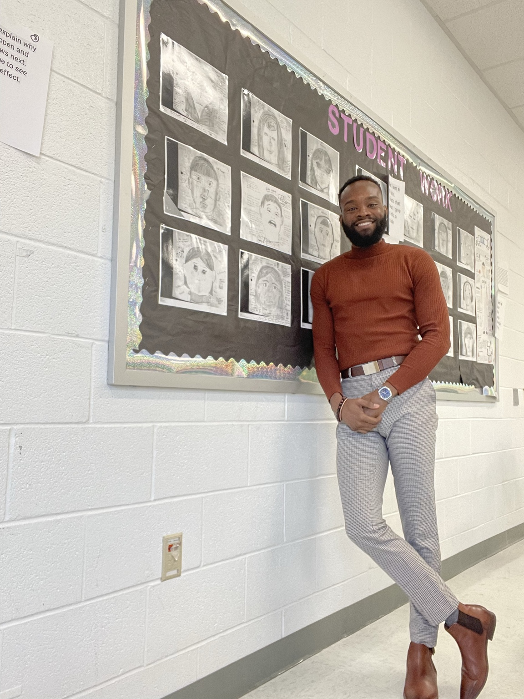

BRANDON BASSETT ACADEMY
SIDE OF AITrust in a Digital Age
◎✦
THE HUMANSIDE OF AITrust in a Digital Age
The Human Side of AI
Understanding how humans build trust with intelligent machines.
Proposed book · Concept coverExplore artificial intelligence, communication, trust, and the future of human connection with Dr. Brandon Bassett.
JOIN THE CONVERSATIONIndependent educational academy · Website concept
With a PhD in Strategic Media, Dr. Bassett studies the relationship between people and intelligent technology. His doctoral research examines trust and perceived intelligence in AI voice assistants.
Brandon Bassett Academy is envisioned as a home for scholarship, open dialogue, and accessible learning.
READ THE DISSERTATION
Exchange ideas, ask better questions, and build connections with fellow learners. Explore a discussion or start your own.
When you use an AI assistant, what helps you decide whether to believe it?
Be the first to contribute to this prototype conversation.
Interactive prototype: discussions and replies are stored in this browser only, not shared with other visitors.
A live conversation on how people build relationships with emerging technology.
Connect with fellow learners for regional conversations and networking.
Explore doctoral research, publishing, and the process of asking meaningful questions.
Explore Dr. Bassett's research and a preview of possible future books. The three illustrated books below are concepts, not published titles or products for sale.
Understanding how humans build trust with intelligent machines.
Proposed book · Concept coverWhy we believe what we believe in a technology-shaped world.
Proposed book · Concept coverA fresh perspective on communication and the future of society.
Proposed book · Concept coverThought-provoking conversations at the intersection of artificial intelligence, communication, trust, and the human experience.
Invite Dr. Bassett for a keynote, university lecture, panel discussion, professional workshop, or podcast conversation.
What shapes our perceptions of AI systems, and why does it matter?
Communication, credibility, and relationships in an automated age.
Building critical thinking and digital literacy in tomorrow's leaders.
Tell us about your event. This concept form prepares an inquiry you can copy; it does not send a booking request.
A space for conversations about artificial intelligence, society, and the human experience. Explore the podcast's studio and envision a home for future episodes, guests, and audience questions.
Podcast listening links and episode catalog to be added.
Help shape a community of curious, thoughtful learners. The following are proposed faculty standards for this academy concept.
Relevant master's degree preferred, or substantial professional experience; demonstrable subject-matter expertise.
Excellent communication, integrity, empathy, intellectual curiosity, and inclusive engagement.
Comfort with virtual facilitation, educational technology, adapting to change, and collaborative learning.
Apply → Share credentials and portfolio → Interview → Sample teaching session → Academy review and onboarding.
Academy recognition would be internal, not state teacher licensure or accredited certification.
Future profiles of invited researchers, guest teachers, and community experts.
Planned workshops on AI literacy, digital communication, research, and media ethics.
Our vision includes educational access, charitable initiatives, and collaborative partnerships. Future verified supporters and sponsors can be featured here.
Proposed scholarships and community learning opportunities.
Space for confirmed nonprofit and educator partnerships.
Future sponsorship and partnership inquiries.